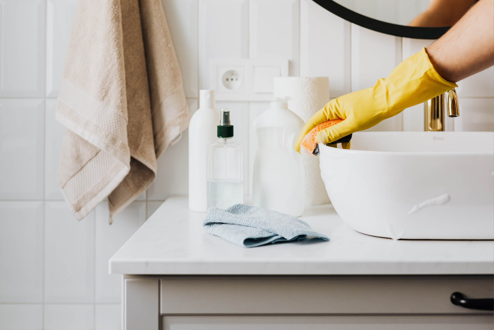

There's a difference between deep cleaning your home and simply getting it back to a manageable state.
When your kitchen is covered in dishes, the counters are cluttered, laundry is waiting to be washed, and small trash cans are overflowing, it can feel like you need an entire afternoon to get everything under control. But you don’t always need a deep clean. Sometimes, you just need a quick reset.
A 10-minute home reset focuses on the tasks that make the biggest visual and practical difference. By clearing a few key areas, dealing with dishes, starting one load of laundry, and taking out the trash, you can make your home feel noticeably calmer without spending hours cleaning.
The best part? You're also making tomorrow easier for yourself.
Why a Quick Home Reset Works
Cleaning can feel overwhelming when you look at your entire home as one big project. Instead of trying to tackle everything at once, a reset gives you a small number of specific tasks to complete.
The goal isn't perfection. It's progress.
A quick reset can help:
- Reduce visible clutter
- Keep dishes and laundry from piling up
- Make frequently used spaces easier to use
- Prevent small messes from becoming bigger cleaning projects
- Give your home a more organized appearance
- Make the next morning feel less hectic
The key is to avoid getting distracted by tasks that aren't part of the reset. You’re not reorganizing the pantry or scrubbing the baseboards. You’re simply putting your home back into a clean, functional state.
The 10-Minute Home Reset
Set a timer for 10 minutes and work through these five areas. If you finish early, great. If you don’t, stop when the timer ends.
1. Clear One High-Visibility Surface
Start with the surface that bothers you the most.
This might be the kitchen counter, dining table, coffee table, entryway bench, or another frequently used area.
Put away anything that doesn't belong, throw away obvious trash, and quickly wipe the surface if it needs it.
You don't need to declutter the entire room. One clean surface can make the surrounding space look significantly more organized.
Quick tip: The kitchen counter is often a good place to start because it is one of the most frequently used surfaces in the home.
2. Reset the Kitchen
The kitchen is one of the most important areas to tackle before the day is over. A messy kitchen can make the next morning feel more chaotic before you've even had breakfast.
Start by:
- Putting food away
- Loading the dishwasher
- Washing any dishes that can't go in the dishwasher
- Clearing unnecessary items from the counters
- Quickly wiping down the countertops
- Giving the sink a quick scrub
You don't need to deep clean the kitchen every night. The goal is simply to leave it ready for the next day.
An empty sink and clear counter can make a surprisingly big difference when you walk into the kitchen the next morning.
3. Start One Load of Laundry
If laundry is piling up, use your reset as an opportunity to get one load moving.
Gather a load, put it in the washing machine, add detergent, and start the cycle.
That's it.
You don't need to fold everything in the laundry room or organize your entire closet. Starting one load creates forward momentum and prevents the laundry pile from becoming an even bigger task later.
One important reminder: Don't forget about the load once the washing cycle ends. Move it to the dryer or hang it up when it's ready.
4. Take Out the Trash
This is one of the quickest ways to make your home feel fresher.
Empty the kitchen trash and quickly check the smaller garbage cans around the house, particularly in bathrooms, bedrooms, and home offices.
Tie up the bags and take them outside.
Getting trash out of the house removes both clutter and unpleasant odors, making the entire home feel cleaner with very little effort.
5. Put Things Back Where They Belong
Use whatever time you have left to return misplaced items to their usual homes.
Shoes by the door? Put them away.
Blankets on the couch? Fold them.
Mail on the counter? Sort it or put it in its designated spot.
Toys in the living room? Return them to their storage area.
The goal isn't to organize. It's to restore order.
If an item doesn't have a home, don't spend your 10 minutes trying to create one. Put it in a designated temporary spot and save the organizing project for another day.
What to Do If You Have More Than 10 Minutes
If your timer goes off and you still have energy to clean, you can keep going. But don't feel like you have to.
If you have another 10 minutes, choose one additional task rather than bouncing between rooms.
For example:
- Vacuum the main living area
- Wipe down the bathroom sink and mirror
- Sweep the kitchen floor
- Change the bed sheets
- Dust the most visible surfaces
- Clean fingerprints from doors and light switches
Keeping the focus narrow prevents a quick reset from turning into an exhausting cleaning marathon.
When Should You Do a Home Reset?
There's no single right time to do a reset. Choose the moment that works best with your schedule.
Before Bed
A nighttime reset can help you wake up to a cleaner kitchen and more organized home.
Focus on dishes, counters, trash, and anything that would make the next morning easier.
Before Guests Arrive
If someone is coming over and your home needs a quick refresh, prioritize the areas guests are most likely to see.
Clear the main surfaces, straighten the living room, clean the bathroom, and take out the trash.
Before Leaving for Work
A quick morning reset can keep small messes from waiting for you when you return home.
Put away anything that's already out, load the dishwasher, and take out the trash if necessary.
When Your Home Feels Overwhelming
This may be the most useful time to use the reset.
When you're not sure where to start, don't try to clean the entire house. Set a timer and complete the five basic tasks.
Once you've made a little progress, deciding what to do next becomes much easier.
The Key Is Consistency, Not Perfection
A 10-minute reset isn't designed to replace regular cleaning or deep cleaning. Instead, it helps prevent everyday messes from accumulating between larger cleaning sessions.
Think of it as maintenance.
You clear the counters before clutter takes over. You deal with the dishes before the sink becomes full. You start the laundry before the hamper is overflowing. You take out the trash before the garbage can is packed.
Small tasks become much easier when they don't have a chance to turn into big ones.
Make Tomorrow Easier With Ten Minutes Today
Your home doesn't have to be spotless at the end of every day.
Sometimes, a clean kitchen counter, empty sink, fresh trash bag, and one load of laundry are enough to make the whole house feel more manageable.
The next time your home feels like it's getting away from you, set a 10-minute timer and focus on the areas that make the biggest difference.
You may not finish everything—and that's okay.
The goal isn't to have a perfect home.
It's to leave your future self with a home that's a little easier to live in.